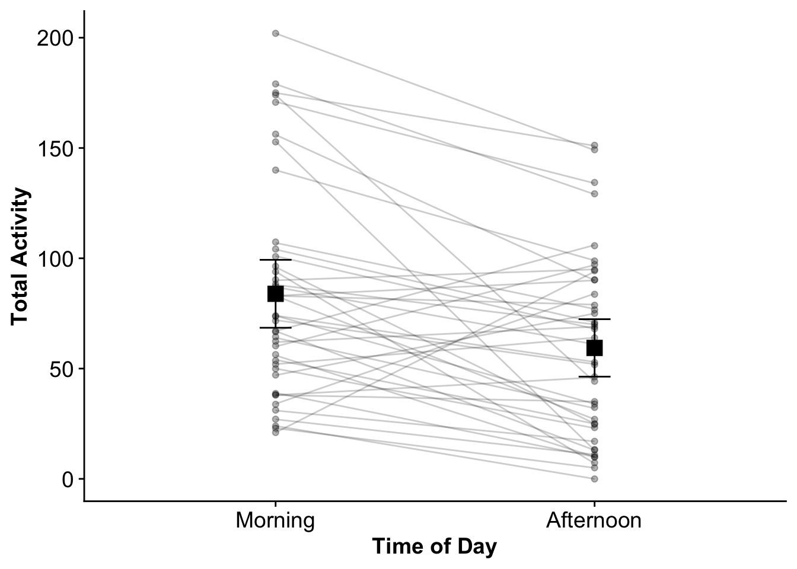
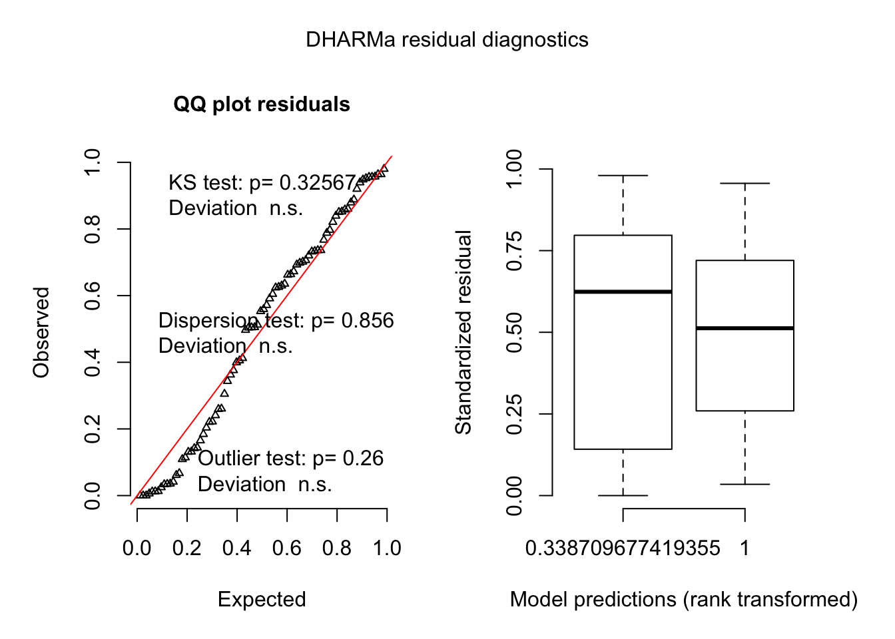

Activity between time periods
To see whether there was a difference in the total number of choices a butterfly made at a particular time period I XYZ.
Variables
total.activityis the total number of choices (correct and incorrect) a butterfly made in a time periodtime.of.dayis the time period of the trial (morning or afternoon)cageis the identity of the cage the individual was tested and trained inidis the identity of the individual butterfly
Model
activity.model =
glmer(total.activity ~ time.of.day + (1 | cage/id),
data= data, family = poisson)Results
| term | estimate | std.error | statistic | p.value |
|---|---|---|---|---|
| (Intercept) | 4.270 | 0.102 | 41.887 | < .001 |
| time.of.day2afternoon | -0.346 | 0.026 | -13.082 | < .001 |
On average butterflies make 24 less choices in the afternoon.

Figure 1: The morning and afternoon activity values for individuual btuterflies. Data are means +/- 95% CI. Lines connects individuals across time periods
Model Residuals

#keycol <- "training"
#valuecol <- "n.morning.colour"
#gathercols <- c("n.morning.colour.initial", "n.morning.colour.test")
#data = gather_(data, keycol, valuecol, gathercols)
#View(data %>% mutate(training=recode(training, n.morning.colour.initial = "untrained", n.morning.colour.test = "trained")))